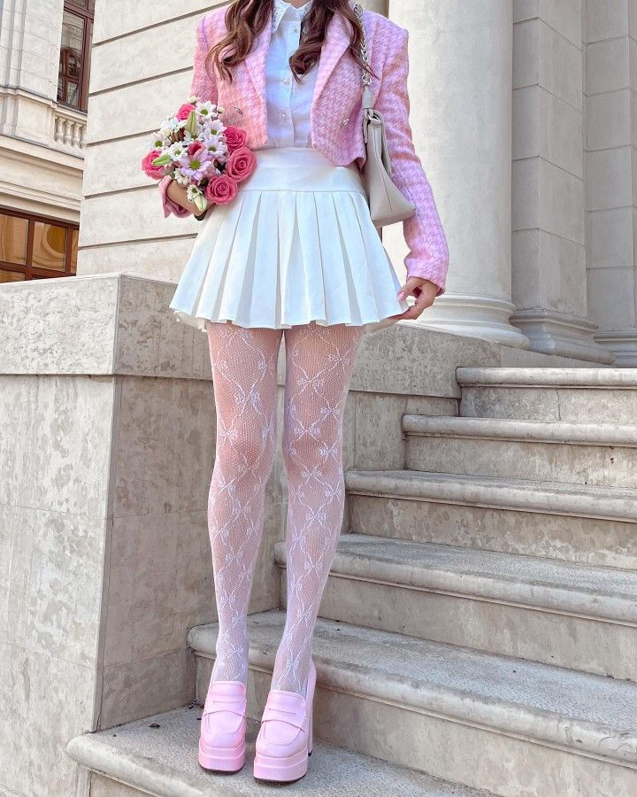
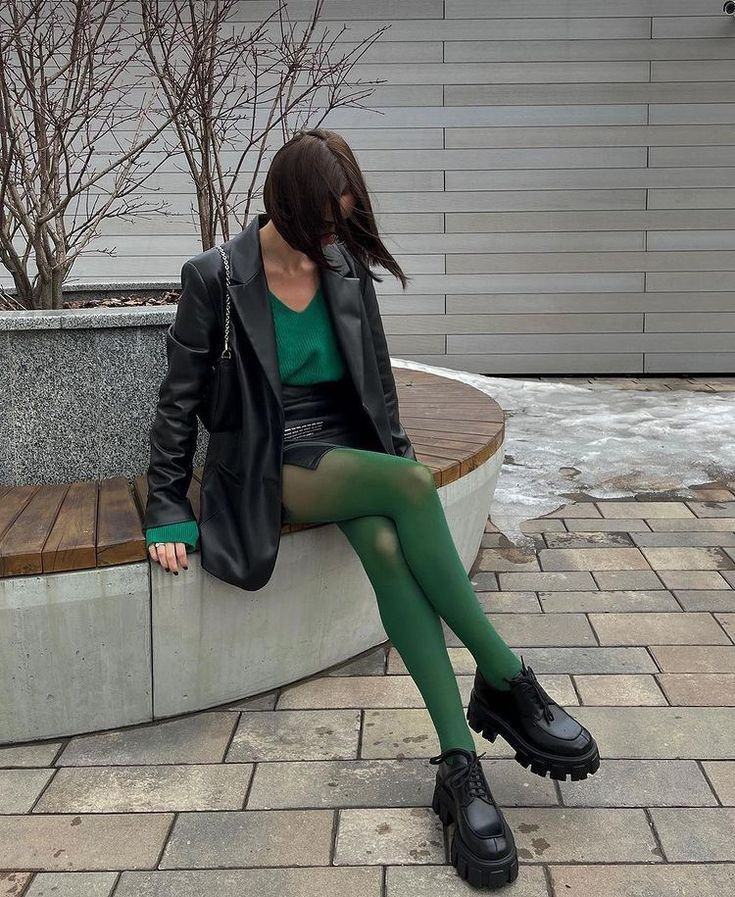

| Carolina Herrera tiene las claves para lucir blusas elegantes color blanco en Primavera-Verano 2025 | |
|
|
La princesa Diana llevó en los 90 la tendencia de las chamarras Varsity que vuelve en 2025 | |
|  |  | No hay mejor forma de llevar faldas en primavera que con medias de colores, palabra del street style |
|
Blusas polo de manga larga, o el básico preppy más subestimado de Primavera-Verano 2025 | |